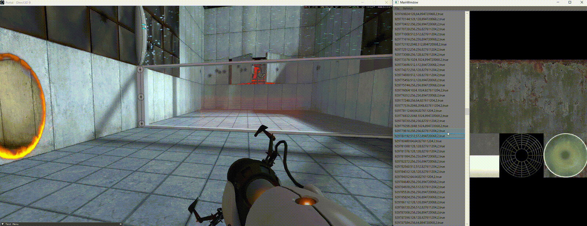
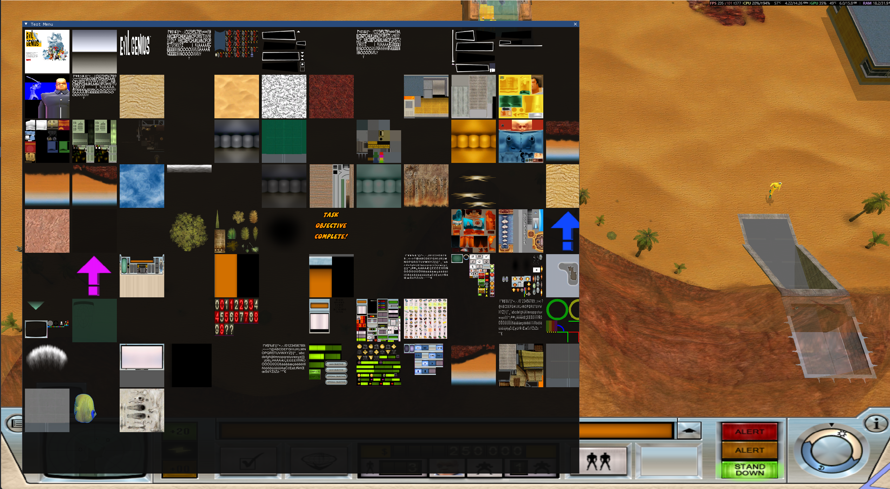

An ongoing project for a DirectX 9 realtime texture inspector using an injected hook dll and a WPF frontend.

I first started out by creating the basic injectable dll. The main goal was to ensure that the hooks were setup correctly. I am using minhook to handle creating the trampoline functions between the real DirectX function calls and my overidden ones. I created a hook for the EndScene function and setup a basic Imgui to render.
Next I created a hook for the CreateTexture DX function. Here I can track the creation of new textures and store pointers to them. From these pointers, I setup the imgui to draw all the loaded textures. I also at this step tested a hook for the SetTexture function. We can intercept this function to replace the incoming texture pointer with our own one. By simply loading my own custom texture and substituting it for one of the in-game textures I can manipulate which textures are drawn at runtime. With these ideas proven out, I next wanted to move away from using Imgui and instead create a WPF application to preview textures and allow the user to select replacement textures.

One of the next big challenges at this stage was handling communication between the hook library and the C# WPF application. For this I used Named
Pipes. The WPF app acts as the host, with the hook acting as the client. The server sends commands to the client and the client sends back a response.
At this stage I created two commands:
Another challenge was collecting the texture data for all the created textures. In DirectX 9 textures by default are loaded directly into VRAM leaving
few opportunities to intercept the data on the CPU. To bypass this I had to add some more hooks, specifically an UpdateTexture hook allows me
read texture data when it is copied from CPU into GPU. Depending on the game this allows me to collect a significantly more textures, however this still
does not collect all textures loaded into VRAM.
Next steps will be to expose picking a replacement texture file to the user interface and creating a command to send that information over to the
hook library. In the hook we can then create a texture and substitute it for the selected reference texture.